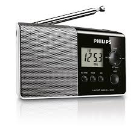

The Radio: A Communication Breakthrough
Developed in the late 19th and early 20th centuries by inventors such as Guglielmo Marconi, the radio enabled the wireless transmission of sound, transforming communication and entertainment worldwide.
The radio became an essential tool for broadcasting news, music, and cultural programming. It played a pivotal role during times of war and emergency, ensuring the rapid dissemination of critical information.
Impact on Modern Society
The radio connected people in unprecedented ways, laying the foundation for subsequent innovations like television and the Internet. It remains an important medium for entertainment, education, and emergency communication.
With the advent of digital broadcasting, radio continues to evolve and maintain its relevance in the modern age.
Back to Top 10 Best Inventions